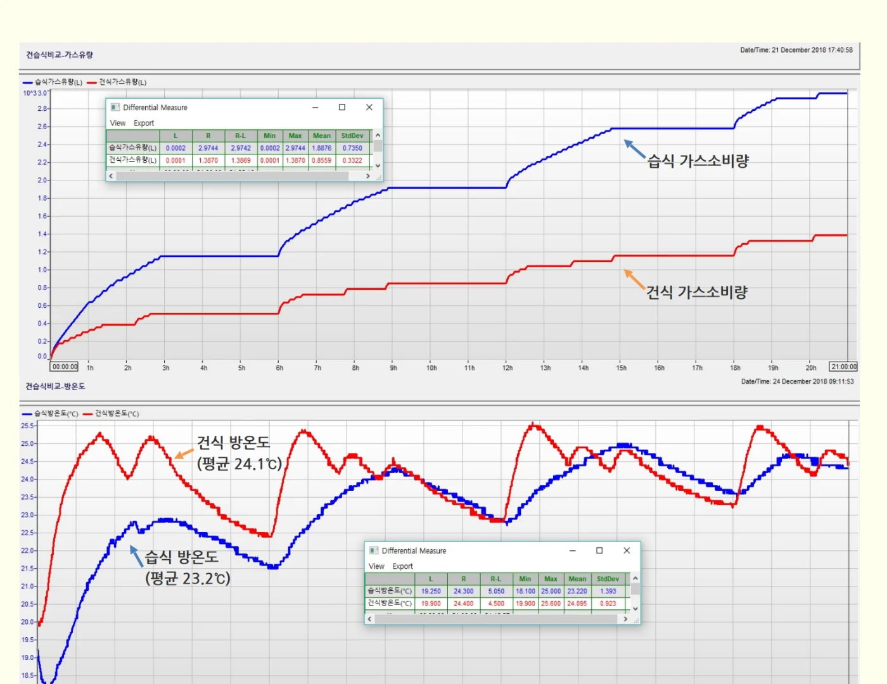

입주자 · 일반 소비자
입주자에게 건식온돌 아파트는 무엇이 좋나요?
요약 답변
건식온돌 아파트의 장점은 세 가지입니다. ① 층간소음 1등급(경량 29dB·중량 34dB) 구조, ② 습식 대비 난방에너지 53% 절감(84㎡ 기준 연 약 32~42만원, 자체 분석), ③ 시멘트·몰탈을 쓰지 않는 바닥입니다. 1등급 가산비로 분양가가 84㎡ 기준 약 373만원 오르더라도, 난방비 절감으로 약 10년 안에 회수되는 것으로 분석됩니다.
- 층간소음
- 1등급
- 연간 난방비 절감 (84㎡)
- 약 32~42만원
- 40년 누적 절감
- 약 1,280~1,680만원
- 가산비 회수
- 약 9~12년
84㎡ 기준 난방비 비교
| 구분 | 습식온돌 | 건식온돌 | 절감액 |
|---|---|---|---|
| 겨울철 월 난방비 (12~2월) | 약 9~10만원 | 약 4.2~4.7만원 | 월 약 5만원 |
| 환절기 월 난방비 (3~4, 10~11월) | 약 4~5만원 | 약 1.9~2.4만원 | 월 약 2.5만원 |
| 연간 합계 | 약 60~80만원 | 약 28~38만원 | 연 약 32~42만원 |
| 간헐난방 시 (최대 약 70% 절감) | 약 60~80만원 | 약 18~24만원 | 연 약 42~56만원 |
실험과 실제 가구에서 확인한 난방비 절감

- 53.7%: 한국에너지기기산업진흥회 난방에너지 절약 성능 시험성적 (2017.11)
- 승온 시간: 14℃→21.5℃까지 건식 1시간, 습식 4시간 / 가스 소모량 건식 370ℓ, 습식 1,480ℓ
인천 서구 당하동, 같은 건물 두 가구의 실제 가스요금
| 월 | 301호 (건식) | 302호 (습식) | 차이 | 절감률 |
|---|---|---|---|---|
| 2016.11 | 3,020원 | 7,230원 | -4,210원 | 58% |
| 2016.12 | 29,430원 | 59,730원 | -30,300원 | 51% |
| 2017.01 | 61,720원 | 100,290원 | -38,570원 | 38% |
| 2017.02 | 70,290원 | 130,090원 | -59,800원 | 46% |
| 2017.03 | 76,900원 | 118,010원 | -41,110원 | 35% |
| 합계 | 241,360원 | 415,350원 | -173,990원 | 42% |
분양가가 오르면 손해 아닌가요?
1등급 가산비는 84㎡ 기준 약 373만원입니다. 연간 난방비 절감 중간값 약 37만원을 적용하면 10년 차에 거의 본전(-3만원), 11년 차부터 이익으로 돌아서고, 40년 거주 시 누적 순이익은 약 1,107만원으로 계산됩니다.
| 거주 연차 | 누적 (난방비 절감 - 가산비) |
|---|---|
| 1년 | -336만원 |
| 5년 | -188만원 |
| 10년 | -3만원 (손익분기) |
| 20년 | +367만원 |
| 40년 | +1,107만원 |
80년 동안 바닥에 드는 비용 (생애주기비용)
| 구분 | 습식 | 건식 |
|---|---|---|
| 최초 공사비 (패널 히팅 + 마감재) | 4,092,200원 | 10,912,000원 |
| 1회 교체 (철거·신설) | 8,360,000원 | 902,000원 (부분 교체) |
| 1회 교체 시 이사비 (이사 2회·사다리·보관) | 3,250,000원 | 없음 |
| 2회 교체 합계 (25년 주기) | 23,220,000원 | 1,804,000원 |
| 총비용 (LCC) | 27,312,200원 | 12,716,000원 |
처음 깔 때는 건식이 비싸지만, 습식은 교체할 때마다 바닥을 다 뜯고 이사까지 해야 해서 80년 총비용은 건식이 절반 이하입니다.
건강과 안전
- 마그네슘보드 방사능지수(라돈 관련) 0.0653으로 기준값 1의 약 1/15
- 시멘트·몰탈을 쓰지 않아 포름알데히드·육가크롬 미검출
- 60만 회 반복하중 기준 40년 영구변형 없음
- 넘어졌을 때 바닥 충격 경도 Gs 57.36으로 습식(약 150)의 약 1/3, 영유아·어르신 낙상 시 유리
- 폼알데하이드 0.003mg/㎡·h, TVOC 0.182mg/㎡·h, 톨루엔 0.001mg/㎡·h (모두 기준 이하)
층간소음으로 드는 비용을 줄입니다
층간소음 때문에 이사(약 300~1,000만원), 방음매트 구매(약 50~300만원), 분쟁·소송 비용이 생기기도 합니다. 처음부터 1등급 바닥이면 이런 비용과 이웃 갈등을 예방할 수 있습니다.
자주 묻는 질문
건식온돌 아파트는 난방비가 정말 적게 나오나요?
다담솔루션은 습식 대비 난방에너지 53% 절감 시험성적서를 보유하고 있습니다. 자체 분석에서는 84㎡ 기준 연간 약 32~42만원 절감으로 계산됐습니다.
층간소음 1등급 아파트는 얼마나 조용한가요?
1등급은 경량·중량충격음이 각각 37dB 이하인 구조입니다. 다담솔루션 구조는 경량 29dB, 중량 34dB로 법정 기준 49dB보다 15~20dB 낮습니다.
우리 집에도 건식온돌을 깔 수 있나요?
리모델링이나 바닥 교체 공사 때 적용할 수 있습니다. 건물 구조와 슬래브 상태에 따라 검토가 필요하니 02-783-7878로 문의해 주세요.
건식온돌을 실제로 쓰는 집은 난방비가 얼마나 줄었나요?
인천 서구 당하동 같은 건물의 건식 가구(301호)와 습식 가구(302호)를 2016년 11월~2017년 3월 비교한 결과, 가스요금이 241,360원 대 415,350원으로 42% 적었습니다.
건식온돌은 처음 비용이 비싸지 않나요?
최초 공사비는 건식이 더 높지만, 80년 동안 25년마다 교체하는 비용과 이사비를 포함한 생애주기비용은 습식 약 2,731만원, 건식 약 1,272만원으로 건식이 절반 이하입니다.
근거 자료
- 지이코노미, 「“층간소음 해결이 최고의 민생”…다담솔루션 이금재 대표를 만나다」 (2023.12.17)
- 경향신문, 「다담솔루션 “층간소음 해결 신기술 인증 획득”」 (2022.10.05)
- 다담솔루션 「건식온돌 도입에 따른 사업수지 영향 분석」 (2026.04.04, 84㎡ × 1,000세대 · 30층 가정)
- 다담솔루션 신기술(NET) 설명자료 「건축물 Blank 진동특성을 고려한 층간소음 저감용 건식온돌패널 설계 및 제조기술」 (신기술 인증 제1442호 관련)
- 다담솔루션 기업설명자료(IR, 2022.08)